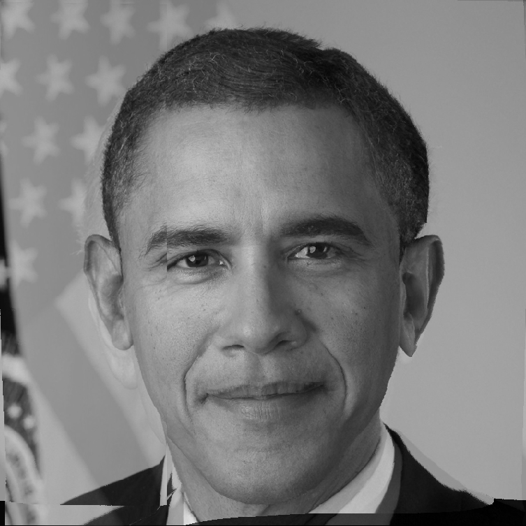

Lab 4 (Morphing) Report
Nikhil Teja (2014CSB1011) | Vamsi (2013CSB1038)
Morphing of 2 images
In this we have morphed 2 images by using the Beier-Neely Morphing technique. And No inbuilt Function was used in the process
In order to achieve this we had followed the following steps.
Step 1
We have identified and given the tie points to the image and manually supply them in a
text file .
Step 2
We have caluclated two warp images warp 0 and warp 1 for each value of t and avergae them to produce different intermediate images it depend on the value of t .
.
And in the next step we have created a series of transition images to create an illustion of morphing .

These images produced with varying values of t are then used to produce a gif image which gives us an illution like the above diagram ..